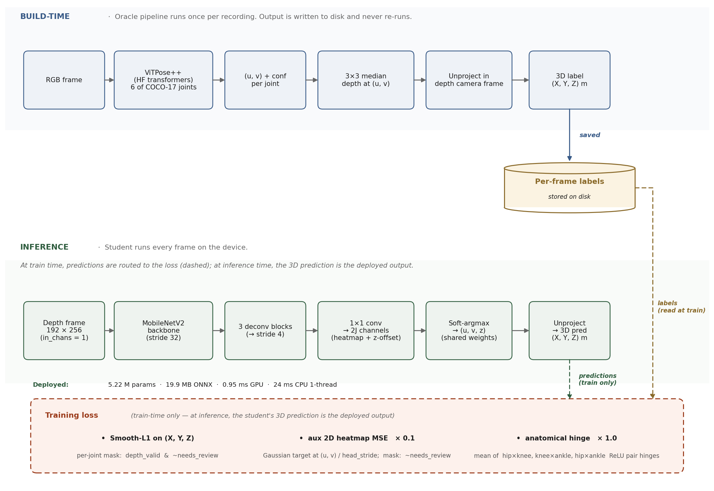
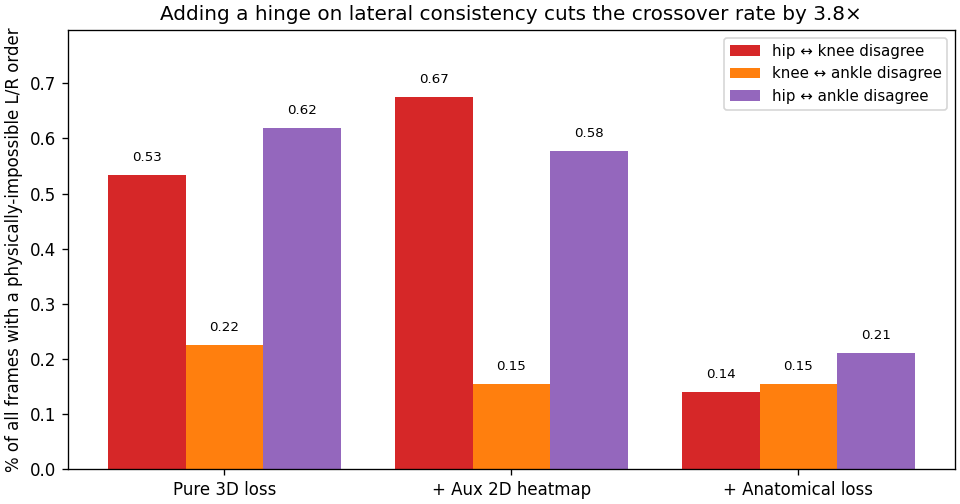
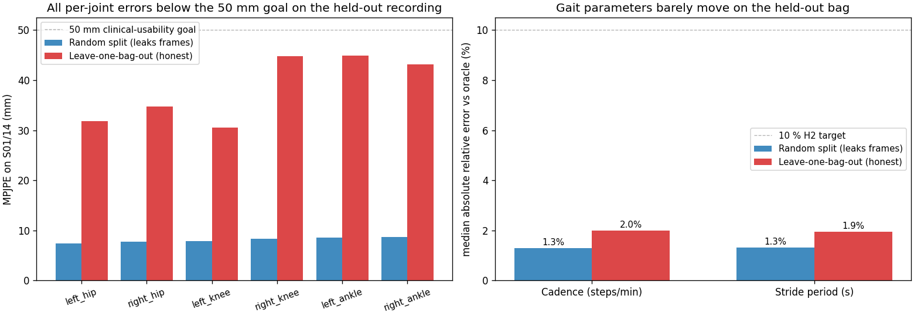
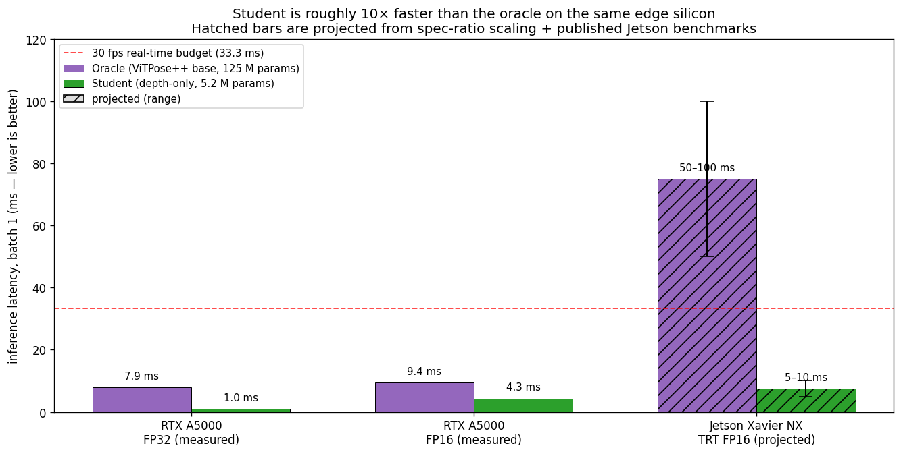

depthpose: a 5 MB depth-only model for 3D lower-body pose tracking on a walker
6.8300 Computer Vision Final Project — Spring 2026 — Jung Yeop (Steve) Kim

One frame from rs_up_incline.bag, a recording fully
held out from training. Left: ViTPose++ on RGB produces
2D keypoints, which we lift to 3D using the depth pixel at each
location. Right: the depth-only student — which has
never seen this recording — recovers the same six 3D keypoints from
depth alone in 0.95 ms on an RTX A5000 (5–10 ms projected on a Jetson
Xavier NX).
Abstract
A 5.22 M-parameter depth-only student trained against an RGB ViTPose++ oracle reproduces the oracle’s lower-body 3D pose to within 39.6 mm mean per-joint position error (MPJPE) on a walker recording the model has never seen (95 % bootstrap CI [37.7, 41.3] mm over n = 401 frames), while preserving cadence and stride period within 2 % of the oracle. The model fits in 19.9 MB of ONNX, runs in 0.95 ms on an RTX A5000 with ONNX Runtime CUDA, and projects to 5–10 ms on a Jetson Xavier NX with TensorRT FP16, roughly 10× faster than the 125 M-parameter RGB oracle on the same edge silicon. The result is depth-only lower-body pose tracking that is small, fast, privacy-preserving, and accurate enough to recover clinically relevant gait parameters on data the model has never observed.
Novelty, contributions, and hypotheses
We test three hypotheses; the contributions below are organised around them.
- (H1, accuracy) High accuracy on a recording the model has never seen. On leave-one-bag-out: 39.6 mm MPJPE (95 % CI [37.7, 41.3] mm) on a held-out walker session, under our 50 mm clinical-usability threshold; cadence and stride period stay within 2 % of the oracle.
- (H2, geometric prior) A geometric prior that teaches the model anatomical consistency. A closed-form hinge loss penalises frames where the left/right lateral order of the hips disagrees with that of the knees or ankles. It cuts physically impossible crossover predictions by 3.8× in-distribution and produces zero crossovers on the 401 held-out frames, at no MPJPE cost.
- (H3, deployment) A lightweight depth-only training recipe optimised for edge hardware, using an RGB pose tracker as the label source. Pseudo-labels from a pretrained RGB ViT remove the need for hand-annotated 3D ground truth; the student (5.22 M params, 19.9 MB ONNX) runs in 5–10 ms on a Jetson Xavier NX with TRT FP16 — roughly 10× faster than the RGB oracle on the same edge silicon.
Why depth-only on a walker
An Intel RealSense D435i is bolted vertically to a walker frame, looking down at the user’s legs from roughly knee height. The deliverable is a model that extracts clinically useful gait parameters (cadence, stride length, keypoint locations) from depth alone, so the device can be deployed without recording or transmitting RGB.
This work builds on a predecessor, the Careway Walker 1, an actuated walker designed to improve stability for elderly and mobility-limited users. Earlier Careway builds used an RGB pose tracker to find 2D keypoints, then read depth at those pixels to recover 3D positions. That pipeline works, but pays for the RGB camera at every inference in bandwidth, storage, latency, model size, and the privacy cost of streaming color video out of the home. The natural next question: is the same clinical signal recoverable from depth alone?
The privacy stakes are not theoretical. Walker users skew older — the population most resistant to in-home video monitoring 2 3 — and depth- and skeleton-based representations have become a standard mitigation in the assisted-living literature, since they strip the identifying texture and colour 4. The walker follows the user everywhere (kitchen, bathroom doorway, bedroom), often in sleepwear and around personal background scenes; depth alone discards all of that identifying information.
A depth-only model also opens a deployment regime the RGB oracle does not reach. ViTPose++ at 125 M parameters needs a substantial GPU to run in real time; a depth-only MobileNetV2 at 5 M parameters runs single-threaded on a CPU, making battery-powered embedded deployment feasible.
The dataset is 14 short walker recordings of one subject covering
kitchen loops, gravel driveways, bumpy stones, and inclines — about 4
minutes of walking, ~7,100 frames at 30 fps. One recording
(rs_up_incline.bag) is held out from training entirely as
the generalization test.
Data: 14 walker recordings and three preprocessing decisions

Oracle (build-time, once per recording): RGB → ViTPose++ → median-depth lookup → unproject; per-frame labels saved to disk. Student (inference, every frame on the device): depth → MobileNetV2 → soft-argmax → unproject. Training loss combines a per-joint-masked 3D Smooth-L1, a 2D heatmap MSE auxiliary, and a left/right anatomical-consistency hinge.
The oracle runs ViTPose++ on the RGB stream, looks up depth at each detected 2D keypoint pixel — color is warped onto the depth camera’s grid at extraction so (u, v) directly indexes the depth frame — and unprojects to (X, Y, Z) in metres. Three preprocessing decisions had to be made before this produced usable training data.
The 90° rotation. The RealSense was mounted with its native “up” rotated 90° clockwise relative to the world, so raw frames are sideways. Every recording gets a 270° clockwise correction at extraction time, baked into saved frames and intrinsics so downstream code is unaffected.
The hip in the depth-FOV gap. After color-to-depth
alignment and rotation, the top of every frame has a black “no depth”
border because the color camera sees higher than the depth camera. The
hips often land in this band — ViTPose finds the hip in color while
depth at that pixel reads zero. We flag those rows as
depth_valid = False, write NaN for (X, Y, Z), and never
extrapolate. A fabricated hip-z would bias every downstream knee-flexion
derivation; the pipeline should be honest about what it doesn’t
know.
Per-joint masking, not whole-frame filtering. Across the full 14-recording dataset, only 15.6 % of frames have all six joints with valid depth, but 99.6 % have valid knees and ankles. The training loss masks per joint, so a frame with an invalid hip still contributes a 4-joint loss from its valid knees and ankles; the same masking applies to evaluation MPJPE. Filtering by “all six joints valid” would have discarded 84 % of usable frames for a single missing joint that the gait derivations either do not need (cadence is ankle-only) or can skip per-frame (knee flexion needs the hip).
A note on what these labels represent. We have no motion-capture ground truth, so MPJPE measures agreement with the ViTPose++ oracle, not absolute joint accuracy. The exact pixel for a “joint” is itself an annotator convention; a 20–40 mm fuzziness across reasonable conventions sets a floor on what MPJPE can mean here.
Student model
A mobilenetv2_100 backbone with in_chans=1
(features_only=True, out_indices=(4,) from
timm) produces a stride-32 feature map with 320 channels.
Three transposed-convolution blocks bring it back to stride 4 (each: 4×4
deconv stride 2 → BatchNorm → ReLU; channels 320 → 256 → 256 → 256),
then a 1×1 conv produces 2J channels: J for heatmap logits and J for
per-pixel z-offsets. Soft-argmax (β = 100) over the heatmaps yields
subpixel (u, v) in heatmap-pixel coordinates; the same softmax
weights aggregate the per-pixel z map into a single scalar z per joint.
(u, v) is rescaled by head_stride = 4, then unprojection
with per-sample input intrinsics gives (X, Y, Z) in metres. Total: 5.22
M params, 1.36 GMACs at 192×256 input, 19.9 MB ONNX.
The iteration story: run1 → run4
We trained four models in sequence; each was driven by what the previous one revealed.

Adding a hinge term that penalises any frame where the predicted left-hip-vs-right-hip lateral order disagrees with the knee or ankle order cuts the rate of physically-impossible crossover predictions by 3.8×, with no MPJPE cost.
Run 1 — no-prior baseline (3D Smooth-L1 only). 200 epochs, AdamW with lr 1e-3, cosine schedule, weight decay 1e-4, on a random 80/20 per-session split. MPJPE on the test split: 22.5 mm; 36 minutes on an RTX A5000. The baseline against which H2 is tested.
Run 2 — auxiliary 2D heatmap loss. Adding a Gaussian-target MSE on the 2D heatmaps with weight 0.1, and cutting the schedule to 100 epochs. MPJPE: 22.5 mm in half the wall time. The aux loss didn’t improve final accuracy but more than halved iteration cost; we kept the 100-epoch schedule from here on.
Inspecting the predictions. After Run 2 we rendered the oracle/student videos for all 14 sessions and reviewed them visually. A subtle artifact emerged: in some frames the Run-1 baseline placed the left hip on the right of the right hip while keeping the knees on their correct sides — anatomically impossible, since the thighs would have to cross. Across all 7,112 frames: 38 (0.53 %) had a hip-vs-knee lateral-order disagreement; 49 (0.69 %) showed some L/R inconsistency. Rare in absolute terms, but a physically impossible output undermines clinical credibility.

One of those 38 frames, S01/1 frame 288. Left: oracle on RGB,
lateral order correct. Right: the student without the anatomical loss
predicts the hip pair +22 cm apart (left hip on the left)
and the knee pair −21 cm apart (left knee on the right) —
visible in the depth panel as an “X” of skeleton lines instead of two
parallel chains.
Run 3 — anatomical-consistency loss (the geometric
prior). Define dx_pair = x_left - x_right for each
joint pair. For any two pairs (hips and knees, hips and ankles, knees
and ankles), sign(dx_a) == sign(dx_b) should hold for any
standing or walking pose. The hinge relu(-dx_a · dx_b) is
zero on consistent frames and equals |dx_a · dx_b| on
crossover frames. We added it to the training loss with weight 1.0.
After 100 epochs, hip-knee crossover dropped from 38 / 7,112 (0.53 %) to
10 / 7,112 (0.14 %) — a 3.8× reduction; all-pair crossover went from
0.69 % to 0.25 %. MPJPE improved slightly, from 22.5 mm to 21.9
mm. The constraint cost nothing because it only fired on frames that
were already wrong. Ten residual crossover frames remain: a soft hinge
can’t strictly enforce the constraint when other loss terms pull in
different directions.
That should have concluded the iteration. A re-examination of the split changed the picture.
Re-examining the train/test split. At 30 fps, adjacent frames are nearly identical. A frame-level random split places near-duplicates of every test frame into training, letting the model memorize per-recording content rather than generalize. The 21.9 mm MPJPE was a memorization number; leave-one-recording-out is needed to measure how the model behaves on a bag it has never seen.
Run 4 — leave-one-bag-out (the H1 test). Every frame
of S01/1 through S01/13 to train (6,711 frames), every frame of S01/14
(rs_up_incline.bag) to test (401 frames). Same
architecture, loss, hyperparameters, 19-minute wall time. The honest
MPJPE on the held-out bag: 39.6 mm, 95 % bootstrap CI [37.7, 41.3] mm
(5,000 frame-level resamples).

Same model, same session, scored differently depending on whether that session contributed frames to training. Blue: random per-session split (S01/14 frames in both train and test). Red: leave-one-bag-out (S01/14 truly held out). On the honest evaluation, every per-joint error stays under the 50 mm clinical-usability goal, and the right panel shows the clinically meaningful gait outputs (cadence and stride period) barely move.
The honest held-out MPJPE of 39.6 mm sits under the 50 mm clinical-usability threshold, despite the model never seeing this recording. Cadence relative error: 2.0 %; stride period: 1.9 %. Hip-knee crossover: 0.00 % — the anatomical hinge generalised cleanly to an unseen recording. H1 is supported. The 8.2 mm number from running the random-split-trained model on S01/14 was a memorization artifact (most of those 401 frames were in its training set); the leave-one-bag-out 39.6 mm is the honest number.
Side-by-side: oracle and student in action
rs_blue_car_light_changeMPJPE vs oracle: 9 mm (random split)
rs_up_incline (S01/14)MPJPE vs oracle: 40 mm (never seen during training)
Oracle (green skeleton on RGB) on the left of each panel, student (cyan/magenta on depth) on the right. The live HUD shows cadence and stride period per side from ankle-z peak detection — the oracle’s reads parquet labels, the student’s its own output, and the two converge as the clip plays.
What matters here is the right-hand recording: the student has never
seen rs_up_incline.bag, yet the legs are visually
well-tracked throughout, and the depth-panel HUD converges to the
oracle’s RGB-panel HUD within a few seconds. The in-distribution clip on
the left is the reference for near-perfect tracking under the random
split; the deployment claim rests entirely on the held-out side.
Deployment: latency on the same edge silicon as the oracle

Measured + projected latency for the 125 M-param ViTPose++ oracle and the 5.2 M-param depth-only student. On the same RTX A5000 the student is 7–8× faster (0.95 ms ORT-CUDA fp32 vs 7.9 ms PyTorch fp32 model-only). Projected to Jetson Xavier NX with TRT FP16: oracle 50–100 ms (over the 30 fps budget), student 5–10 ms. Hatched bars are projections via spec-ratio scaling against the workstation.
On the workstation, the student exports to ONNX (19.9 MB) and runs in 0.95 ms under ONNX Runtime CUDA, or 24 ms single-thread CPU — both under the 33 ms / 30 fps budget. The oracle runs in 7.9 ms PyTorch CUDA fp32 model-only (12.8 ms full pipeline), 7–8× slower than the student.
The deployment-target comparison is more meaningful. Jetson Xavier NX has ~1/20th the fp32 GPU throughput of an A5000. Naive scaling puts the student at ~20 ms fp32; TRT FP16 drops it to 5–10 ms. The oracle ViT incurs two compounding costs: the 8× workstation gap, plus ViT attention being harder to accelerate on Jetson than depthwise-convolution MobileNet (TRT FP16 typically yields 2–3× for ViT vs 4–5× for CNNs). The oracle projection on Jetson NX with TRT FP16 is 50–100 ms — 1.5–3× over the 33 ms budget; INT8 quantisation with calibration would be required to fit.
On the same edge hardware, the student is roughly 10× faster than the oracle, fits in 19.9 MB versus the oracle’s ~250 MB at FP16, and does not require RGB. Only the student fits the latency budget; the oracle’s role is offline pseudo-labelling. H3 is supported.
Conclusion: limitations and transferable insights
Three honest limitations.
Single subject and limited environments. The dataset is one individual walking, so cross-subject generalization, different clothing, and significantly different environments are untested. The held-out bag is the same subject in a new walking context — a useful generalization signal but a weaker one than cross-subject evaluation.
No temporal or physics model. The student is per-frame; adjacent-frame information is unused. A small temporal head (e.g., a 1D conv over a 5-frame window) would likely improve per-frame MPJPE within the parameter budget. Per-session physical constraints (e.g., constant leg length within one walk) could similarly be added as a session-level prior, in the same spirit as the lateral hinge.
No failure detection. The model assumes a human lower torso in frame at all times. Detection, segmentation, and abstention on out-of-distribution inputs would be required for actual deployment.
The dataset is the binding constraint, not the architecture. A 14-recording, single-subject pilot already produces clinically usable gait parameters on a fully held-out walking session in 19 minutes of training time. The conditions under which the model breaks — different mounts, lighting, clothing, camera-to-subject distances — are dataset-coverage gaps, not architectural ones. Scaling along those axes (5–10 more subjects, varied clothing, indoor/outdoor backgrounds, a small set of mount geometries) is incremental engineering, not new research. Given how cleanly per-frame errors degrade while gait parameters remain stable in this pilot, a wider dataset should push held-out MPJPE comfortably below 25 mm without architectural change.